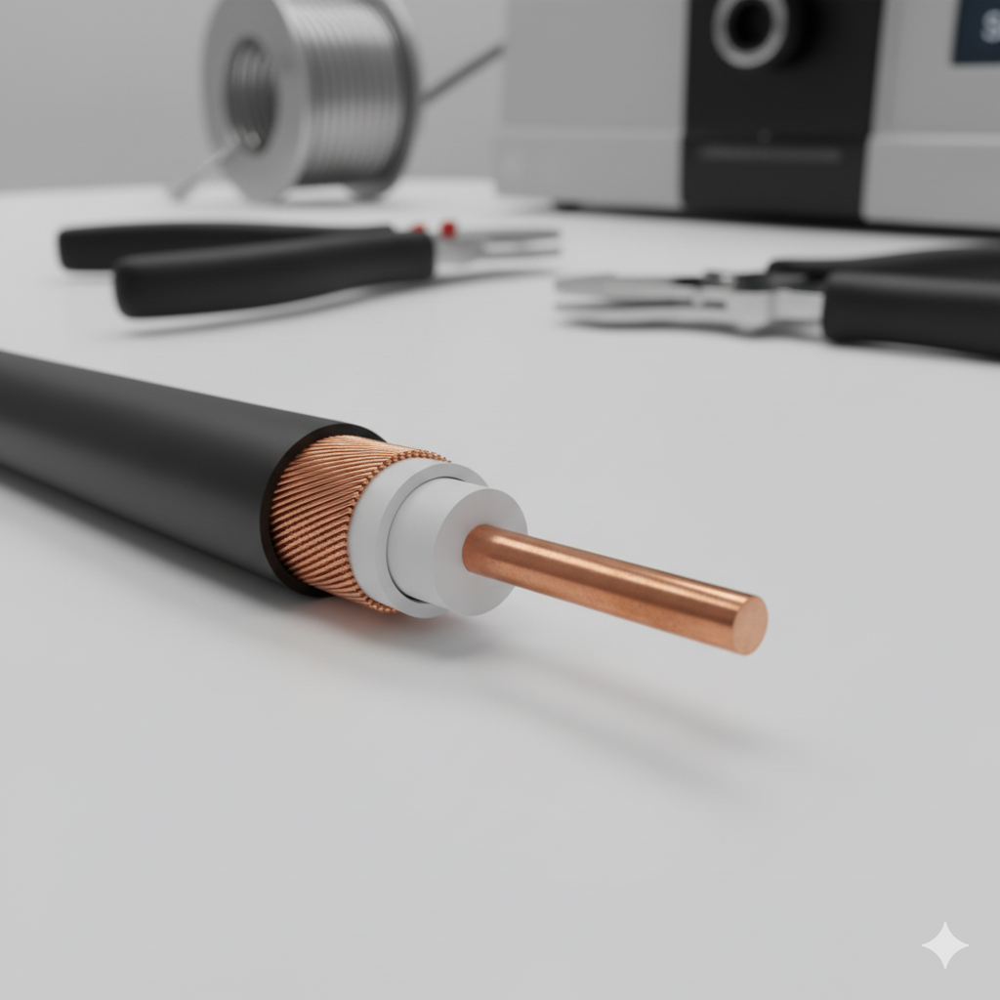
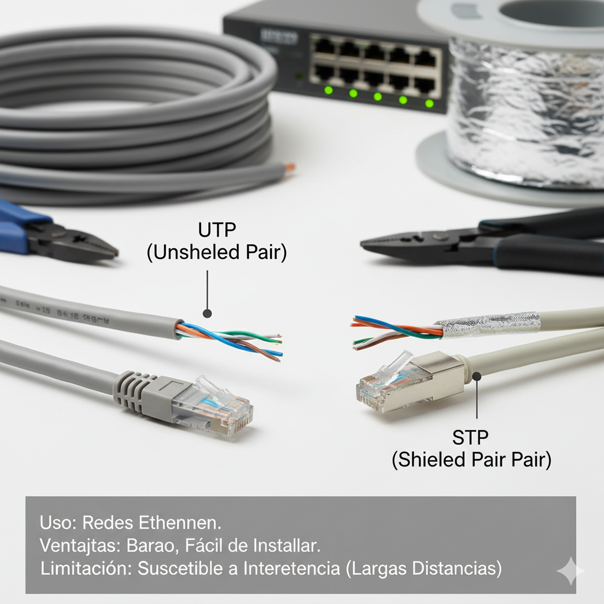
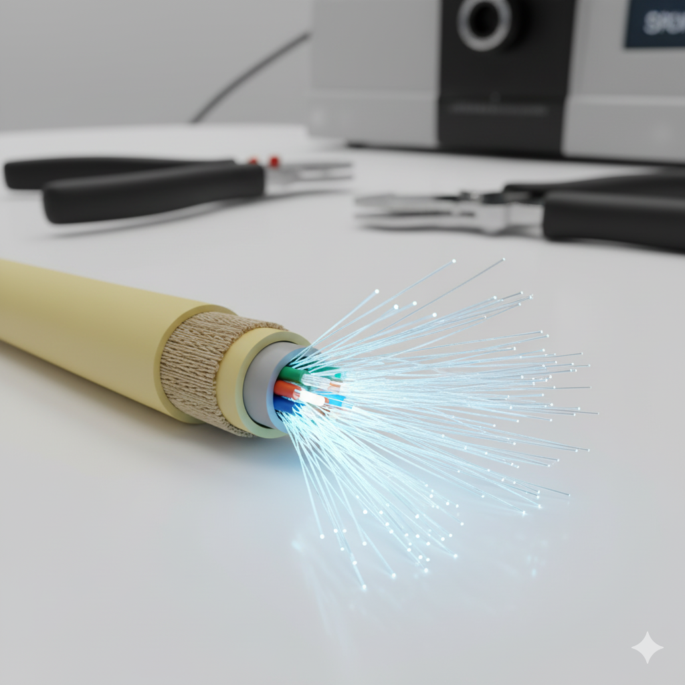

Proyecto: Fundamentos de Telecomunicaciones — Emiliano N. Rubio Valdez & Damaris R. Hernández
Introducción
Esta página presenta los tipos de medios o canales de comunicación utilizados en telecomunicaciones, clasificándolos en guiados (conductores físicos como el cable) y no guiados (medios inalámbricos). El propósito es explicar, ilustrar y reflexionar sobre su funcionamiento, ventajas, limitaciones y su impacto social y ambiental.
Los medios guiados transmiten señales por un medio físico —cobre o fibra— y son preferidos cuando se requiere alta calidad y baja interferencia. Los medios no guiados usan el espacio libre (radio, microondas, satélites) y permiten movilidad y cobertura amplia.
Medios Guiados
Los medios guiados requieren un medio físico que dirija la propagación de la señal. Se usan en redes fijas y para enlaces de alta capacidad.

Cable coaxial
Estructura: conductor central, aislante, malla y cubierta. Uso: TV por cable, redes cableadas legacy. Ventajas: resistente y económico para distancias cortas.

Par trenzado
Tipos: UTP, STP. Uso: redes Ethernet. Ventajas: barato y fácil de instalar. Limitación: susceptibilidad a interferencia en distancias largas.

Fibra óptica
Transmisión por pulsos de luz. Ventajas: ancho de banda muy alto, baja atenuación y resistente a EMI. Uso: backbone de internet, enlaces de larga distancia.
Medios No Guiados
Estos medios no requieren un conductor físico; la señal se propaga por el aire o el espacio libre.
Radiofrecuencia
Microondas
Satelital
Infrarrojo y láser
Ética, ecológico y económico
En el uso de los medios de comunicación se deben considerar aspectos éticos, históricos, políticos, ecológicos y económicos. Por ejemplo:
Impacto ambiental de cables y equipos obsoletos.
Acceso equitativo a la información y conectividad.
Costos de implementación y mantenimiento de redes.
Bibliografía (APA)
Forouzan, B. A. (2013). Data Communications and Networking. McGraw-Hill.
Tanenbaum, A. S., & Wetherall, D. J. (2011). Redes de computadoras. Pearson Educación.
Stallings, W. (2016). Comunicación de datos y redes de computadores. Pearson.